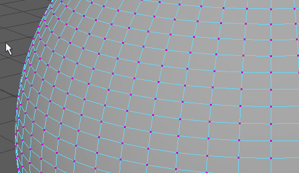

您可以使用箭头键（上箭头键、下箭头键、左箭头键、右箭头键）在多边形网格中移动顶点选择（也称为“行进式拾取”）。如果您在修改网格时需要快速更改为选择相邻顶点，此功能非常有用。
选择并在一个网格中行进式拾取选定的一个或多个顶点
- 选择网格中的一个或一组顶点。
- 可使用上、下、左、右箭头键沿着网格向任意方向移动顶点选择。

使用箭头键选择顶点时存在以下限制：
- 该功能最适用于选择一个顶点的情况。
- 当按箭头键会选择隐藏顶点时（例如在几何体背面），您可能需要翻滚视图才能继续行进式拾取操作。
- 如果您已选择多个顶点并且要行进式拾取经过对象的可见部分，则不会保留最初选择的内容。
- 无法始终在复杂几何体中反转顶点选择；也就是说，如果您按左箭头键移动顶点选择，则使用右箭头键并不能始终返回到原始顶点。
- 当您选择多个顶点并行进式拾取时，并不始终都能返回到初始选择状态。